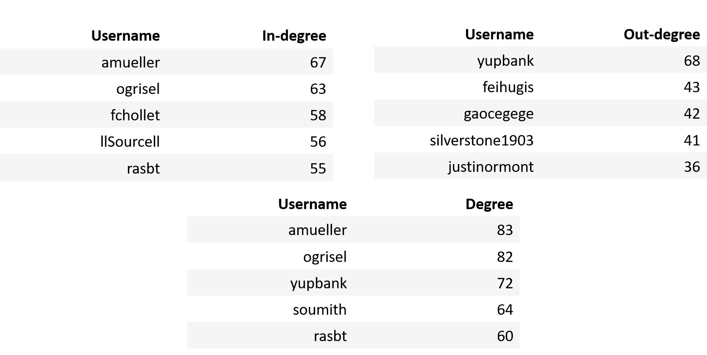
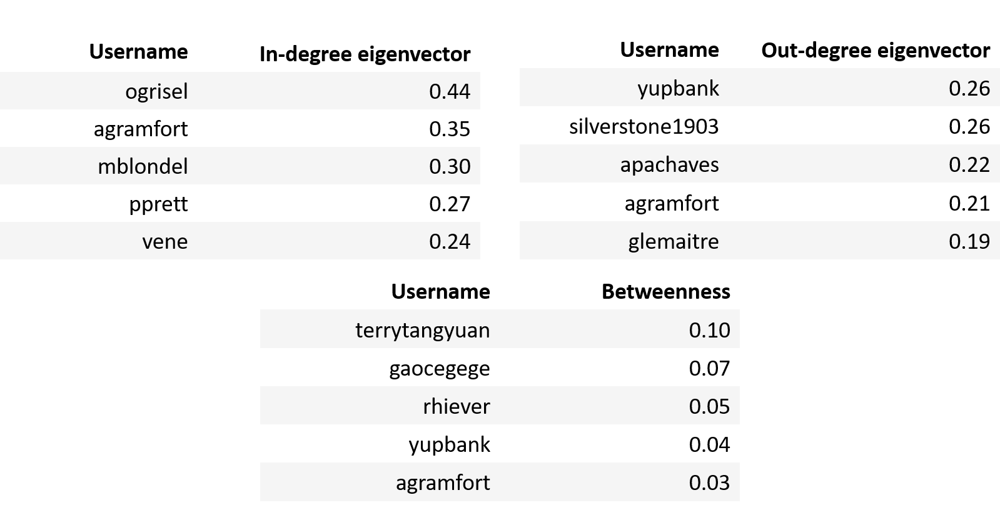

Degree distribution
We first looked into the degree distribution for in- and out-degree that revealed

Both the in- and out-degree distributions are asymmetric as they are right
skewed with long tails. Although most users have zero or small degrees, there
are a few users with a large degree as well. This indicates the presence a few
users that are highly connected to other users in the network.
These **highly connected hubs** of users can be seen as responsible for
keeping the network connected. So a removal of one of the key users would
have a huge impact on the network stucture. Since the hubs of key users
are highly connected, they collect information about other key users fast,
but they also spread information quickly to other users.
The log-log plots of the distributions demonstrate that the network follows
the **power-law degree distribution** meaning that this network is **scale-free** .
This is a typical property of **real world networks**.


Centrality
Next, we explored different centrality measures revealing some of the most central users according
degree , eigenvector and betweenness centrality.
Degree centrality
Eigenvector and betweenness centrality

From the tables it can be seen that some of the most followed users in the network are **amueller**
and **ogrisel**, whereas **yupbank** is the user who follows most of the other users.
Hence these three users are also the ones with most connections overall.
We see that the users **ogrisel** and **silverstone1903** are central according
to both degree- and eigenvector centrality. Further, the users **agramfort** and **yupfort**
is has a lot of influence both when it comes to in and out-degree eigenvector centrality
and betweenness centrality.
Text Analysis
Word clouds and Sentiment Analysis
We analysed the words of the user biographies and repository descriptions based on term frequency.
Here, we also included the languages used in the repositories, to better get an overview of the
most used languages. We present both the most frequent single words as well as word pairs.
Repository descriptions
Repository descriptions
User biographies
User biographies
Repository descriptions
User biographies
Programming languages
Repository descriptions
User biographies
It is seen from the bios that many users seem to be engineers, scientiest, students,
phds, researchers and developers indicating the network has well educated and hard working users.
Adding context from the words pairs, we can even add that this mostly regards software, computer and
data science as well as deep learning. Python is big not only for the programming languages, but
also for the repository descriptions, and a bit smaller for the bios. So GitHub is definitely
popular for Python users and escpecially with use of Jupyter notebook. Though, we also observe
that many other languages are also used.
Looking at the sentiment scores, we do see that the user **gitter-badger** has a very
high sentiment score and is quite positive using words as love and happiness, whereas
some users as **Qovaxx** is deemed quite negative due writing about cancer. It can also
be concluded that users such as **dangsonbk** and **weakish** are probably not worth
following due bios with words as lazy and lost.